id="js_content" style="">他是中国第一代医学病毒专家，是中国免疫学奠基人。
他为中国生产了自己的狂犬疫苗、牛痘疫苗、卡介苗和世界首支班疹伤寒疫苗。
他生产的疫苗曾广泛服务于二战联盟国。
他曾成功遏制1950年华北大范围的鼠疫，拯救千万人免于死亡。
他曾用自己的眼睛做实验，成功分离出沙眼病的衣原体，他成为世界上发现重要病原体的第一个中国人，也是迄今为止的唯一一个中国人。
他被公认为世界“衣原体之父”，他曾是离诺贝尔奖最近的中国人，是真正的疫苗之神。
但是当国际沙眼防治组织要将他推荐为诺贝儿奖候选人时。
他已经含冤而死二十多年。
他就是汤飞凡，一个被中国人遗忘的瑰宝。
今天，每一个中国人都当记住他的故事，今天的悲剧只不过是汤飞凡悲剧的延续和恶果。
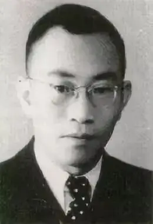
-01- 投医报国
120年前的今天，汤飞凡出身在湖南一个望族，不过他出生时家道中落，父亲靠开馆来维持生计。
汤飞凡童年时目睹了无数父老乡亲死于贫穷和疾病中，这种苦难让他无法忘怀。
15岁时，汤飞凡考入甲种工业学校，准备学一门技术来报效祖国。
两年后，宣教士、教育家胡美博士（Edward Hicks Hume）和颜福庆创建了湘雅医学院（现在全称中南大学湘雅医学院）。
这所教会学校在中国现代医学史上有着重要的地位，而且背后有一个感人至深的故事。
宣教士胡美博士是由耶鲁外国传教会派遣，而耶鲁外国传教会的建立是因为一个人的死亡。
他就是耶鲁大学创始人耶鲁.胡耶尔（Elihu Yale）的后代耶鲁.皮特金。
皮特金是一个虔诚的基督徒，他于1888年进入耶鲁大学并成为一个宣教士，皮特金结婚不久后便来到中国宣教。
1900年，皮特金在河北保定被义和团残忍杀害，死的时候只有31岁。
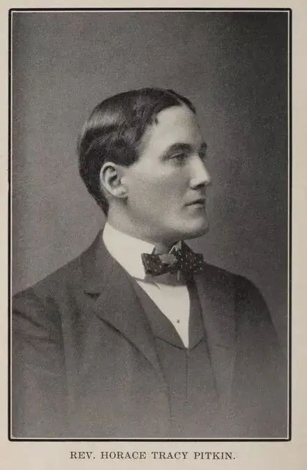
他的殉道让很多耶鲁大学学生悲痛，但是他们没有报复中国，而是成立了耶鲁外国传教会来更好地帮助中国。
这种信仰之下的饶恕和爱让中国人无法理解，直到现在，大多数中国人不知道各大知名院校、医院都是宣教士用血和泪创办，这真的很让人寒心。
因此湘雅医学院的名字取自湖南简称“湘”与Yale谐音“雅”。
胡美博士也是怀着信仰办学：
在最强大的基督教影响力和最高知识、科学标准下开展教育和医学工作。
这样的医学教育自然吸引了汤飞凡，他毅然离开甲种工业学校，成为了湘雅医学院的首批学生。
刚开始，汤飞凡的英语不过关，幸好他受到恩师颜福庆的帮助而得以快速提升。
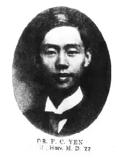
△ 颜福庆：就读于上海圣约翰中学和圣约翰大学医学院，后远赴耶鲁深造
语言能力过关后，汤飞凡艰苦学习7年获得医学博士。
当时学校治学严格，很多学生被淘汰，毕业时只剩下10个人，汤飞凡就是其中之一。
学有所成后，很多同学要拉着他要开业行医，他断然拒绝：
“当一个医生一辈子能治好多少病人？如果发明一种预防方法，却可以使亿万人不得传染病。”
他继续出国到哈佛深造，研究细菌学和传染病。
优秀的汤飞凡获得哈佛的橄榄枝，学校给出各种优渥条件要将汤飞凡留下。
此时，汤飞凡收到恩师颜福庆的来信，信中颜福庆开诚布公，告诉汤飞凡中国医学院教育和中国学生迫切需要他。
最终，汤飞凡毅然回国，在上海建立了一个简陋的实验室开展研究，他当时的主要研究对象就是沙眼病。
沙眼病可能对于我们现在很陌生，可是在那个时代，全球六分之一的人患沙眼，中国沙眼发病率更是高达55％，而沙眼病让无数人眼盲，一辈子活在黑暗中。
当时，日本人野口英世宣称发现了沙眼的病原体──颗粒杆菌，当汤飞凡按照野口英世的论文进行严谨实验时，他发现野口英世是错误的。
这激怒了引以为傲的日本人，汤飞凡顶住压力潜心研究三年，1935年汤飞凡发表论文，获得国际同行的极大认同。
野口就此从日本教科书里消失，汤飞凡成为日本既痛恨又不得不佩服的中国人。
-02- 抗日战争
八年抗战中阻断了汤飞凡对沙眼病的研究。
战争瘟疫让无数人丧命，后来中国成立中央防疫处，汤飞凡则拒绝了英国的橄榄枝，成为了防疫处的主要负责人。
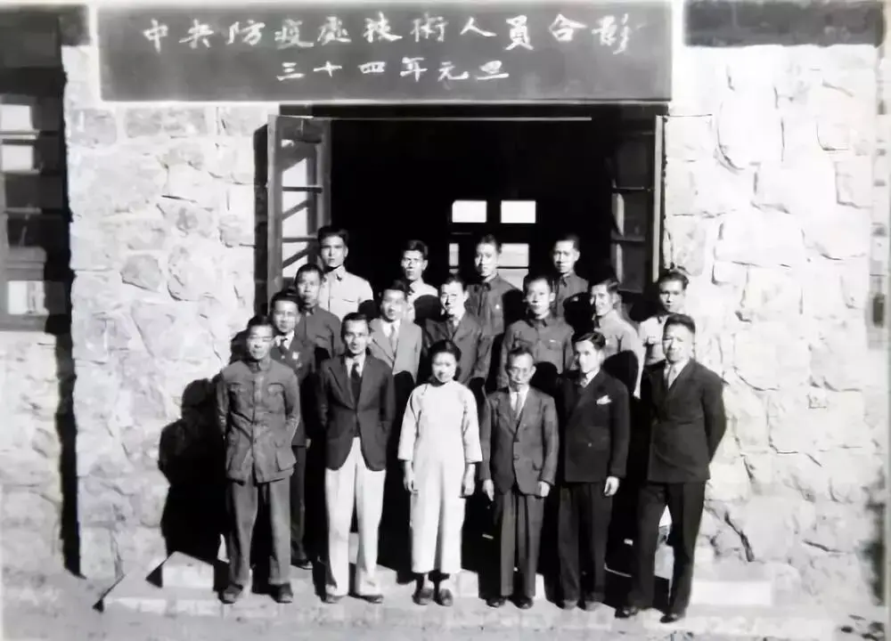
别人用枪和子弹抗击敌人，汤飞凡则用高超的医学和疫苗来拯救中国。
二战时期，中央防疫处成为盟军在亚洲地区最重要的防疫供给中心，挽救了无数人的生命。
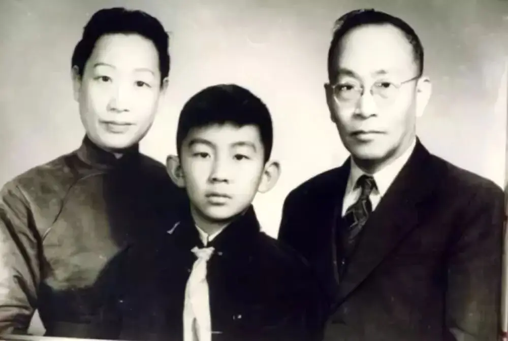
△ 汤飞凡一家三口
-03- 世界“衣原体之父”
上世纪五十年代，中国远离了战争和动乱，汤飞凡得以继续研究沙眼病。
他和北京同仁医院眼科主任张晓楼共同采集了200例典型病例样品进行分离实验。
可是均告失败。
后来汤飞凡转变思路，抛弃通用的病毒分离方法，终于在1955年采用鸡卵黄囊分离的第8次试验，获得了成功。
这株病毒就是著名的TE8。
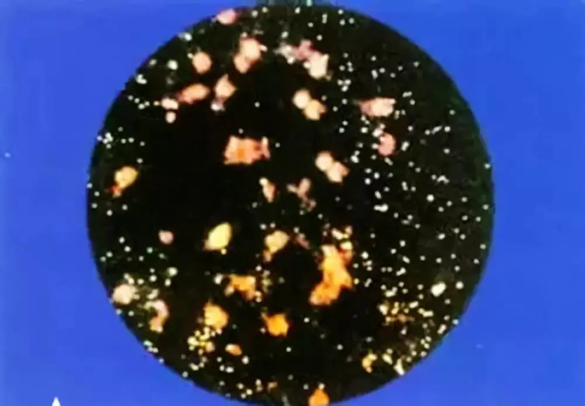
△ 显微镜下的沙眼衣原体
张晓楼激动地催促汤飞凡赶快发表研究成果，出于谨慎，汤飞凡没有立马发表。
而是用自己眼睛做实验试验了研究成果。
确保没有问题后，TE8得到推广，在不到两年的时间里，中国沙眼病发病率不到6%。
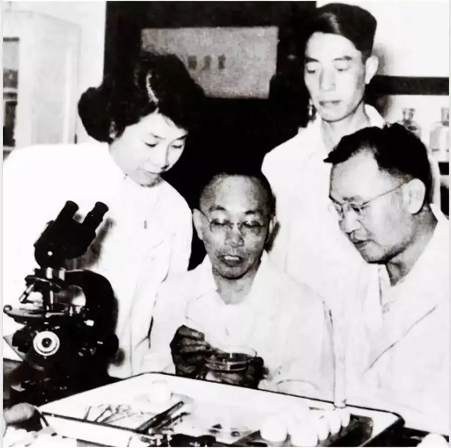
-04- 被“流产”的诺贝尔
1957-1958年，打通了“任督二脉”的汤飞凡很快分离出了麻疹病毒和脊髓灰质炎病毒。
正当汤飞凡的研究工作要走上巅峰的时候，1958年中国爆发了政治上的“拔白旗、插红旗”运动。
汤飞凡变成了资产阶级学术权威、民族败类、国民党反动派的忠实走狗、美国特务、国际间谍、骑在人民头上并把沙眼病毒送给外国人的卖国贼。
更有甚者，有人用恶心的言语中伤他与实验室某女同志有不正常关系。
1958年9月30清晨，汤飞凡不堪受辱上吊自杀。
文革时候，恩师颜福庆也在迫害中在上海病逝。
就这样，我们自废武功，亲手杀死了自己的疫苗之神。
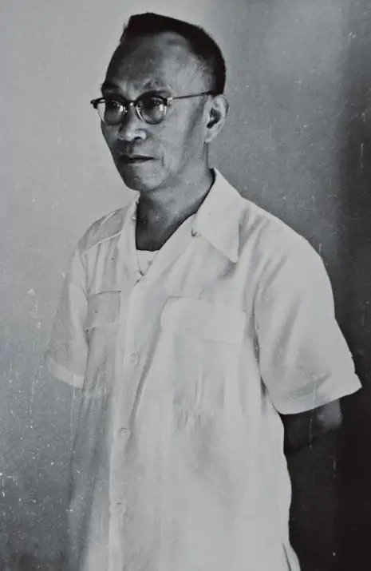
2003年SARS肆虐中国时，专家预言：由于SARS的特殊性，疫苗研制至少需要3年时间。
而一位多年在卫生部门工作的老干部，在接受记者采访时禁不住感叹道：汤飞凡若在，何至于此！
汤飞凡被中国人忘了，但是却被外国人记住了。
1970年，国际上将沙眼病毒和其他几种介于病毒和细菌之间的、对抗菌素敏感的微生物命名为衣原体，汤飞凡是名符其实的衣原体之父。
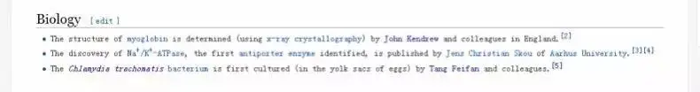
△ 维基百科中1957年科学界发生的大事，在生物学一栏中有三项，其中一项是汤飞凡及其团队，而前两项均已获得诺贝尔奖。
英国著名学者李约瑟博士曾评论汤飞凡说：在中国，他将永远不会被忘记！
现在看来，李约瑟还是不懂中国人。
1980年代，国际沙眼防治组织向汤飞凡颁发沙眼金质奖章，来表彰他的贡献，可是他们不知道，汤飞凡已经去世了二十多年。
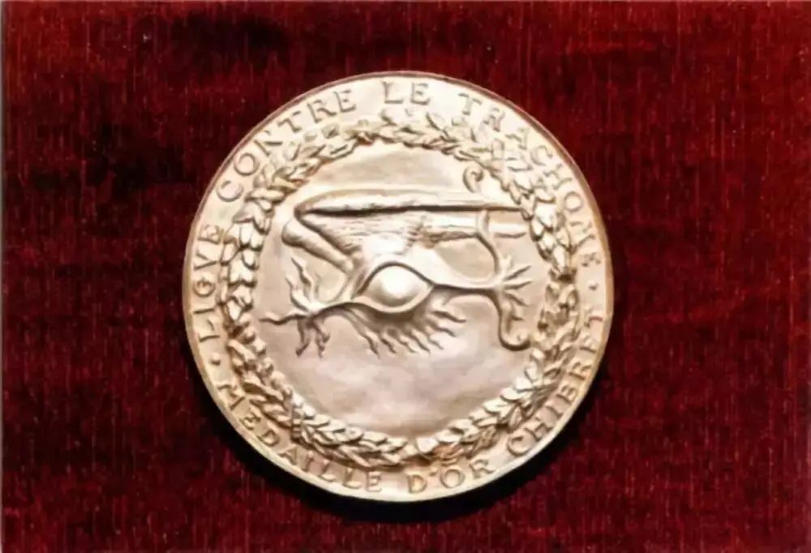
而张晓楼却几乎享受了汤飞凡留下来的全部荣誉，并被无数人歌颂。
直到上世纪80年代末，汤飞凡才得到正名。
可是，或者出于遮羞，或者出于其他原因，关于汤飞凡的宣传很少，今天他仍然被大多数中国人所遗忘。
而野口英世却成了日本的国宝，他在纽约的墓地成了日本人旅游的圣地，新版日圆上还印上了野口英世的头像。
这是我们的悲哀！
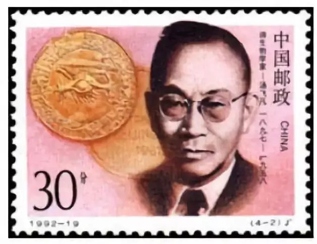
遮羞和遗忘是我们一贯的小聪明，却是今天悲剧的重要原因。
过去，我们将宣教士从中国现代教育、医疗、科技中抹掉，我们以为这样就可以建立大国自信。
岂不知，我们抹掉了感恩，我们抹掉了虚心，我们更是把陶造现代文明的信仰从我们的近代史中抹掉了。
于是，我们别了司徒来登，踢走了洛克菲勒。
燕京大学变成了清华、北大，却没能培养出更多的大师。
协和医学堂变成了北京协和医院，却再也没有往日的医疗水平。
湘雅医学院并入中南大学，又岂能培养出下一个“汤飞凡”。
今天，我们的小聪明又一次上演。
因为我们已经自废武功，美国出于人道主义援助，将很多疫苗技术低价甚至免费赠送给我们。
我们不仅决口不提别人的帮助，甚至硬生生把别人的真疫苗玩成了假疫苗。
倒是义和团的无脑、暴力和慈禧太后当年向八国宣战时的无知、傲慢，我们都学会了。
动不动就要骄傲自大，动不动就要吓尿别人。
幸好，芯片就像过去八国联军一样给了“慈禧”大大一巴掌，不知道这次中兴的赔款会不会又变成若干年后课本上的“辛丑条约”。
今日我们落后的医疗、泯灭的良心、暴戾的脾气，难道不是从我们的历史课本上开始的么。
当汤飞凡含冤而死扇动了蝴蝶的翅膀时，若干年后，假疫苗就打入了无辜小孩的体内。
这是何等的讽刺！
愿上帝怜悯我们的国家，我们需要的不仅仅是自由、民主、法制，更需要悔改、良心和信仰。
关注并回复：汤飞凡
获取纪录片资源
相关推荐：
疯子带着瞎子走路，这正是我们时代的病态！
像猪一样活着，像猪一样死去 !
73年过去了，纳粹离我们有多远？
你们一直在抱怨这个地方，但是你们却没有勇气走出这里
击垮纳粹独裁的六份传单
这里没有挑逗你眼目情欲的小鲜肉
也没有挑动你肉体情欲的段子
更没有膨胀你今生骄傲的鸡血
我们只在乎那些最质朴真诚的作品
在那里我们才能恢复真正的想象力
我们也坚信这才是我们真正需要的

ID:Six_hundred_hits
长按二维码，一键关注
【六百击】
-END-
电影评论
尽情分享朋友圈

苹果打赏通道
小提示：文末广告是腾讯配送广告，内容与本号无关，但您的每次点击（无需反复点）都会给平台带来几毛收益，欢迎您点击支持六百击。